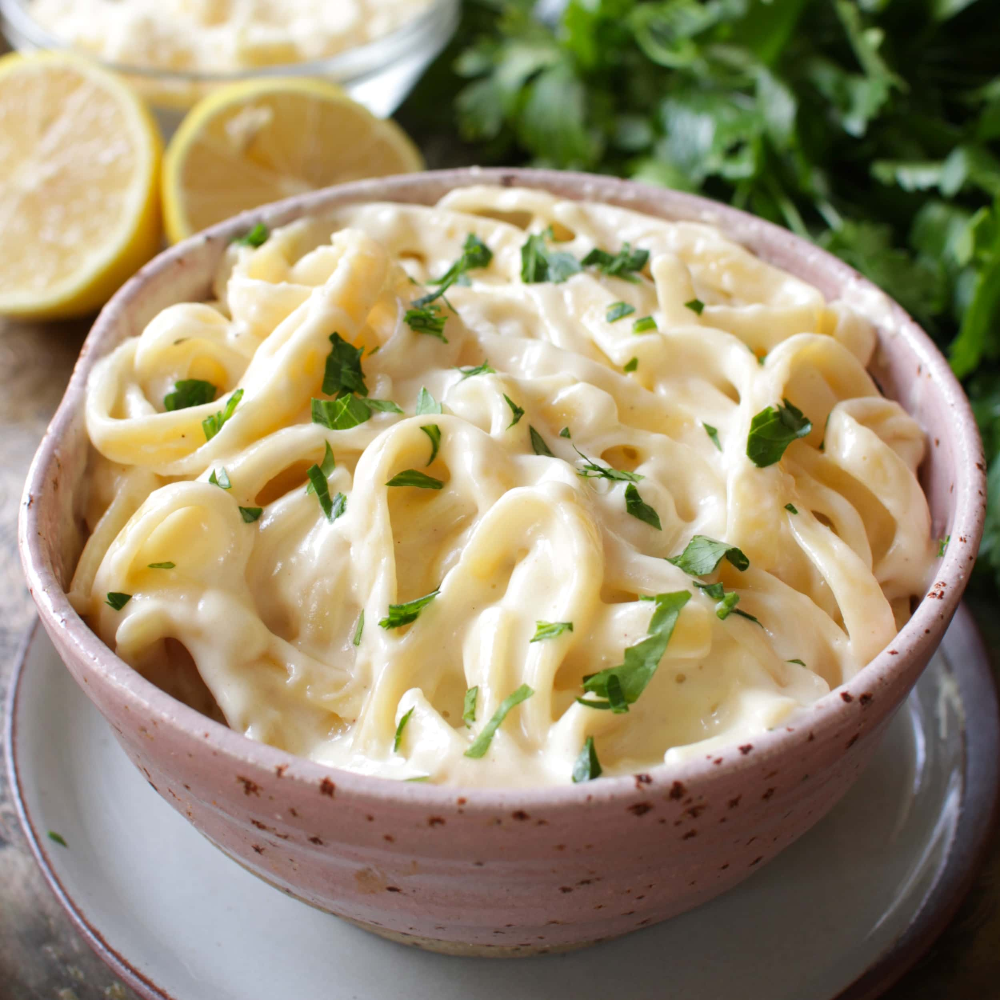

Alfredo

Best Alfredo suace
Ingredients
- Butter
- Cream
- Garlic
- Seasonings
- Parmesan Cheese
Steps
- Warm up the butter and crean in a large saucepan over low heat
- Let it simmer for 2 minutes
- Whisk the garlic and Seasonings
- Add the Parmesan cheese and stir just until the cheese is melted